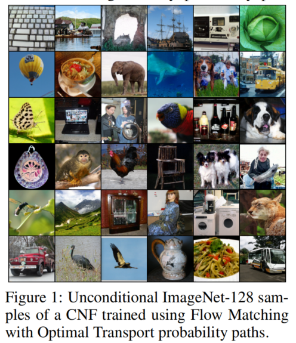
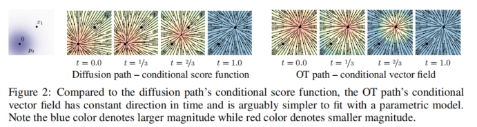
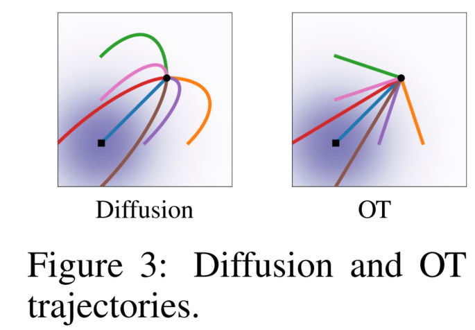
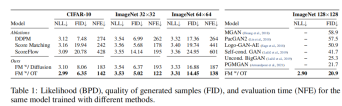
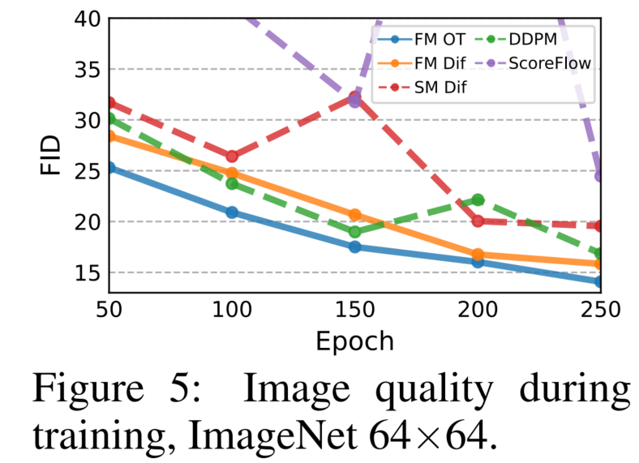
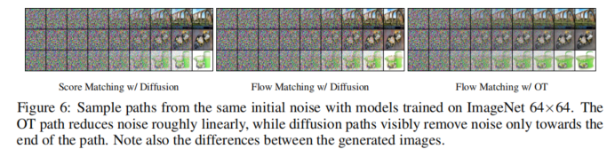
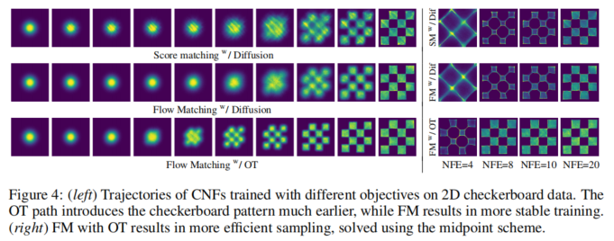
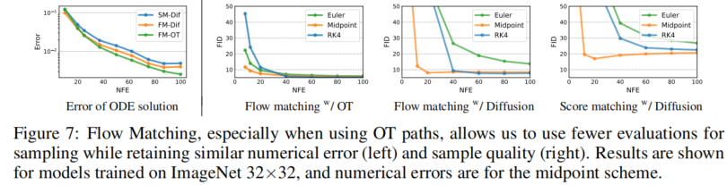
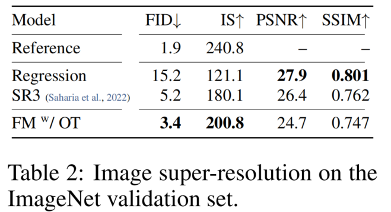

全文翻译
摘要
我们提出了一种基于连续归一化流（CNFs）的生成式建模新范式，使我们能够以前所未有的规模训练CNFs。具体来说，我们提出了流匹配（FM）的概念，这是一种无需模拟的训练CNFs的方法，它基于对固定条件概率路径的向量场进行回归。流匹配与用于在噪声和数据样本之间进行转换的一般高斯概率路径族兼容，现有扩散路径是其中的特定实例。有趣的是，我们发现将FM与扩散路径结合使用，为训练扩散模型提供了一种更强大、更稳定的替代方法。此外，流匹配为使用其他非扩散概率路径训练CNFs开辟了道路。特别值得关注的一个实例是使用最优传输（OT）位移插值来定义条件概率路径。这些路径比扩散路径更高效，训练和采样速度更快，泛化性能也更好。在ImageNet数据集上使用流匹配训练CNFs，在似然性和样本质量方面均优于基于扩散的替代方法，并且使用现成的数值常微分方程（ODE）求解器就能快速可靠地生成样本。
1 引言
深度生成模型是一类深度学习算法，旨在从未知数据分布中进行估计和采样。近年来，生成式建模取得了惊人的进展，例如在图像生成领域（Ramesh等人，2022；Rombach等人，2022），这主要得益于基于扩散的模型（Ho等人，2020；Song等人，2020b）可扩展且相对稳定的训练。然而，由于局限于简单的扩散过程，采样概率路径的空间相当有限，导致训练时间极长，并且需要采用专门的方法（例如Song等人，2020a；Zhang和Chen，2022）来进行高效采样。
在这项工作中，我们考虑连续归一化流（CNFs；Chen等人，2018）这一通用且确定性的框架。CNFs能够对任意概率路径进行建模，尤其值得注意的是，它涵盖了扩散过程所建模的概率路径（Song等人，2021）。然而，除了可以通过例如去噪得分匹配（Vincent，2011）进行有效训练的扩散模型外，目前还没有可扩展的CNF训练算法。实际上，最大似然训练（例如Grathwohl等人，2018）需要进行昂贵的数值ODE模拟，而现有的无模拟方法要么涉及难以处理的积分（Rozen等人，2021），要么存在有偏差的梯度（Ben-Hamu等人，2022）。
这项工作的目标是提出流匹配（FM），这是一种高效的无模拟方法，用于训练CNF模型，使得可以采用通用概率路径来指导CNF训练。重要的是，FM打破了除扩散之外可扩展CNF训练的障碍，并且无需考虑扩散过程，直接处理概率路径。
特别是，我们提出了流匹配目标（第3节），这是一个简单直观的训练目标，用于回归到生成所需概率路径的目标向量场。我们首先展示了可以通过逐样本（即条件）公式来构建这样的目标向量场。然后，受去噪得分匹配的启发，我们表明一种称为条件流匹配（CFM）的逐样本训练目标能提供等效的梯度，并且不需要明确知道难以处理的目标向量场。此外，我们讨论了可用于流匹配的一般逐样本概率路径族（第4节），现有扩散路径是该族的特殊实例。即使在扩散路径上，我们发现使用FM也能提供更强大、更稳定的训练，并且与得分匹配相比，性能更优。此外，这个概率路径族还包括一个特别有趣的情况：对应于最优传输（OT）位移插值的向量场（McCann，1997）。我们发现条件OT路径比扩散路径更简单，形成直线轨迹，而扩散路径则形成曲线。这些特性在实验中似乎转化为更快的训练速度、更快的生成速度和更好的性能。
我们在ImageNet上通过实验验证了流匹配以及基于最优传输路径的构建，ImageNet是一个大型且多样性高的图像数据集。我们发现，在与基于扩散的竞争方法的比较中，我们能够轻松训练模型，在似然估计和样本质量方面都取得良好的性能。此外，我们发现与先前的方法相比，我们的模型在计算成本和样本质量之间实现了更好的平衡。图1展示了从我们模型中选取的无条件ImageNet 128×128样本。
|  |
|---|
| 图1：使用基于最优传输概率路径的流匹配方法训练的连续归一化流（CNF）生成的无条件ImageNet - 128样本。 |
2 预备知识：连续归一化流
设$\mathbb{R}^{d}$表示数据空间，数据点$x = (x^{1}, \ldots, x^{d}) \in \mathbb{R}^{d}$。本文中使用的两个重要概念是：概率密度路径$p: [0, 1] \times \mathbb{R}^{d} \to \mathbb{R}_{>0}$，它是一个随时间变化的概率密度函数，即$\int p_{t}(x)dx = 1$；以及一个随时间变化的向量场$v: [0, 1] \times \mathbb{R}^{d} \to \mathbb{R}^{d}$。向量场$v_{t}$可用于构建一个随时间变化的微分同胚映射，称为流（flow）$\phi: [0, 1] \times \mathbb{R}^{d} \to \mathbb{R}^{d}$，其由常微分方程（ODE）定义：
此前，Chen等人（2018）提出用神经网络$v_{t}(x; \theta)$对向量场$v_{t}$进行建模，其中$\theta \in \mathbb{R}^{p}$是其可学习参数，这进而产生了一个关于流$\phi_{t}$的深度参数化模型，称为连续归一化流（Continuous Normalizing Flow，CNF）。CNF用于通过推送前向方程（push - forward equation）将简单的先验密度$p_{0}$（例如纯噪声）重塑为更复杂的密度$p_{1}$：
其中，推送前向（或变量变换）算子定义为：
如果向量场$v_{t}$的流$\phi_{t}$满足方程（3），则称$v_{t}$生成了概率密度路径$p_{t}$。一种检验向量场是否生成概率路径的实用方法是使用连续性方程，这是我们证明过程中的一个关键部分，详见附录B。我们在附录C中补充了更多关于CNF的信息，特别是如何计算$\mathbb{R}^{d}$中任意点$x$处的概率$p_{1}(x)$。
3 流匹配
令$x_1$表示一个服从某种未知数据分布$q(x_1)$的随机变量。我们假设只能从$q(x_1)$中获取数据样本，但无法得到其密度函数。此外，令$p_t$为一条概率路径，使得$p_0 = p$是一个简单分布，例如标准正态分布$p(x) = N(x|0, I)$，并且令$p_1$的分布近似等于$q$。稍后我们将讨论如何构建这样的路径。流匹配目标旨在匹配这个目标概率路径，从而使我们能够从$p_0$流向$p_1$。
给定目标概率密度路径$p_t(x)$以及相应的生成$p_t(x)$的向量场$u_t(x)$，我们将流匹配（FM）目标定义为：
其中，$\theta$表示CNF向量场$v_t$（如第2节所定义）的可学习参数，$t \sim U[0, 1]$（均匀分布），$x \sim p_t(x)$。简单来说，FM损失通过神经网络$v_t$对向量场$u_t$进行回归。当损失达到零时，学习到的CNF模型将生成$p_t(x)$。流匹配是一个简单且有吸引力的目标，但就其本身而言，在实际中直接使用是难以处理的，因为我们事先不知道合适的$p_t$和$u_t$是什么。有许多概率路径选择都可以满足$p_1(x) \approx q(x)$，更重要的是，我们通常无法得到生成所需$p_t$的封闭形式的$u_t$。在本节中，我们将展示可以使用仅在每个样本上定义的概率路径和向量场来构建$p_t$和$u_t$，并且通过适当的聚合方法可以得到所需的$p_t$和$u_t$。此外，这种构建方式为流匹配创建了一个更易于处理的目标。
3.1 从条件概率路径和向量场构建$p_t$、$u_t$
一种构建目标概率路径的简单方法是通过混合更简单的概率路径：对于一个特定的数据样本$x_1$，我们用$p_t(x|x_1)$表示条件概率路径，使得在$t = 0$时，它满足$p_0(x|x_1) = p(x)$；在$t = 1$时，我们将$p_1(x|x_1)$设计为一个集中在$x = x_1$附近的分布，例如$p_1(x|x_1) = N(x|x_1, \sigma^2 I)$，这是一个均值为$x_1$、标准差$\sigma > 0$足够小的正态分布。对$q(x_1)$求条件概率路径的边缘分布，可得到边缘概率路径：
特别地，在$t = 1$时，边缘概率$p_1$是一个混合分布，它非常接近数据分布$q$，即：
有趣的是，我们还可以通过以下方式“边缘化”条件向量场来定义边缘向量场（假设对于所有的$t$和$x$，$p_t(x) > 0$）：
其中，$u_t(\cdot|x_1): \mathbb{R}^d \to \mathbb{R}^d$是生成$p_t(\cdot|x_1)$的条件向量场。可能不太明显，但这种聚合条件向量场的方式实际上得到了用于对边缘概率路径进行建模的正确向量场。
我们的第一个关键发现是：边缘向量场（公式8）生成边缘概率路径（公式6）。
这在条件向量场（生成条件概率路径的向量场）和边缘向量场（生成边缘概率路径的向量场）之间建立了一种令人惊讶的联系。这种联系使我们能够将未知且难以处理的边缘向量场分解为更简单的条件向量场，这些条件向量场只依赖于单个数据样本，定义起来要简单得多。我们在以下定理中对此进行形式化。
定理1：给定生成条件概率路径$p_t(x|x_1)$的向量场$u_t(x|x_1)$，对于任何分布$q(x_1)$，公式8中的边缘向量场$u_t$生成公式6中的边缘概率路径$p_t$，即$u_t$和$p_t$满足连续性方程（公式26）。
我们所有定理的完整证明都在附录A中。定理1也可以从Peluchetti（2021）中的扩散混合表示定理推导得出，该定理为扩散随机微分方程中的边缘漂移和扩散系数提供了一个公式。
3.2 条件流匹配
遗憾的是，由于边缘概率路径和向量场的定义（公式6和公式8）中存在难以处理的积分，计算$u_t$仍然很困难，因此，直接计算原始流匹配目标的无偏估计量也很困难。相反，我们提出了一个更简单的目标，令人惊讶的是，它将得到与原始目标相同的最优解。具体来说，我们考虑条件流匹配（CFM）目标：
其中，$t \sim U[0, 1]$，$x_1 \sim q(x_1)$，并且$x \sim p_t(x|x_1)$。与FM目标不同，CFM目标只要我们能够从$p_t(x|x_1)$中有效采样并计算$u_t(x|x_1)$，就可以轻松采样得到无偏估计，而这两者都很容易做到，因为它们是在每个样本的基础上定义的。
因此，我们的第二个关键发现是：FM（公式5）和CFM（公式9）目标关于$\theta$的梯度相同。
也就是说，优化CFM目标（在期望上）等同于优化FM目标。因此，这使我们能够训练一个CNF来生成边缘概率路径$p_t$（特别地，在$t = 1$时，$p_t$近似未知数据分布$q$），而无需访问边缘概率路径或边缘向量场。我们只需要设计合适的条件概率路径和向量场。我们在以下定理中对这一性质进行形式化。
定理2：假设对于所有$x \in \mathbb{R}^d$和$t \in [0, 1]$，$p_t(x) > 0$，那么，除了一个与$\theta$无关的常数外，$L_{CFM}$和$L_{FM}$相等。因此，$\nabla_{\theta} L_{FM}(\theta)=\nabla_{\theta} L_{CFM}(\theta)$
4 条件概率路径和向量场
条件流匹配目标适用于任何条件概率路径和条件向量场的选择。在本节中，我们将讨论一类通用的高斯条件概率路径的$p_t(x|x_1)$和$u_t(x|x_1)$的构建。具体而言，我们考虑形式如下的条件概率路径：
其中，$\mu: [0, 1] \times \mathbb{R}^d \to \mathbb{R}^d$是高斯分布随时间变化的均值，而$\sigma: [0, 1] \times \mathbb{R} \to \mathbb{R}_{>0}$描述了随时间变化的标量标准差。我们设定$\mu_0(x_1) = 0$且$\sigma_0(x_1) = 1$，这样所有条件概率路径在$t = 0$时都收敛到相同的标准高斯噪声分布$p(x) = N(x|0, I)$。然后我们设定$\mu_1(x_1) = x_1$且$\sigma_1(x_1) = \sigma_{min}$，$\sigma_{min}$被设置得足够小，使得$p_1(x|x_1)$是一个以$x_1$为中心的集中高斯分布。
对于任何特定的概率路径，都存在无数个向量场可以生成它（例如，通过在连续性方程中添加一个散度为零的分量，见公式26），但其中绝大多数是由于存在使基础分布保持不变的分量，例如当分布具有旋转不变性时的旋转分量，这会导致不必要的额外计算。我们决定使用与高斯分布的规范变换相对应的最简单向量场。具体来说，考虑（基于$x_1$的）变换：
当$x$服从标准高斯分布时，$\psi_t(x)$是一个仿射变换，它将$x$映射到一个均值为$\mu_t(x_1)$、标准差为$\sigma_t(x_1)$的正态分布随机变量。也就是说，根据公式4，$\psi_t$将噪声分布$p_0(x|x_1) = p(x)$推前到$p_t(x|x_1)$，即：
这个流进而提供了一个生成条件概率路径的向量场：
用$x_0$重新参数化$p_t(x|x_1)$，并将公式13代入CFM损失中，我们得到：
由于$\psi_t$是一个简单的（可逆）仿射映射，我们可以使用公式13以封闭形式求解$u_t$。对于一个随时间变化的函数$f$，令$f’$表示其对时间的导数，即$f’=\frac{d}{dt}f$。
定理3：设$p_t(x|x_1)$是如公式10所示的高斯概率路径，$\psi_t$是其如公式11所示的相应流映射。那么，定义$\psi_t$的唯一向量场具有以下形式：
因此，$u_t(x|x_1)$生成了高斯路径$p_t(x|x_1)$。
4.1 高斯条件概率路径的特殊实例
我们的公式对于任意函数$\mu_t(x_1)$和$\sigma_t(x_1)$都是完全通用的，并且我们可以将它们设置为满足所需边界条件的任何可微函数。我们首先讨论那些能够恢复与先前使用的扩散过程相对应的概率路径的特殊情况。由于我们直接处理概率路径，因此可以完全抛开对扩散过程的推理。因此，在下面的第二个例子中，我们直接基于Wasserstein - 2最优传输解来构建概率路径，这是一个有趣的实例。
示例一：扩散条件向量场。扩散模型从数据点开始，逐渐添加噪声，直到它近似于纯噪声。这些可以被表述为随机过程，为了在任意时刻$t$获得封闭形式的表示，需要满足严格的条件，这导致了具有特定均值$\mu_t(x_1)$和标准差$\sigma_t(x_1)$选择的高斯条件概率路径$p_t(x|x_1)$（Sohl - Dickstein等人，2015；Ho等人，2020；Song等人，2020b）。例如，反向（从噪声到数据）方差爆炸（VE）路径具有以下形式：
其中，$\sigma_t$是一个递增函数，$\sigma_0 = 0$，且$\sigma_1 \gg 1$。根据公式16，我们得到$\mu_t(x_1) = x_1$和$\sigma_t(x_1) = \sigma_{1 - t}$。将这些代入定理3的公式15中，我们得到：
反向（从噪声到数据）方差保持（VP）扩散路径具有以下形式：
其中$\alpha_{t}=e^{-\frac{1}{2}T(t)}$，$T(t)=\int_{0}^{t} \beta(s)ds$，$\beta$是噪声尺度函数。根据公式18，我们得到$\mu_t(x_1) = \alpha_{1 - t}x_1$和$\sigma_t(x_1)=\sqrt{1 - \alpha_{1 - t}^{2}}$。将这些代入定理3的公式15中，我们得到：
当限制在这些条件扩散过程时，我们构建的条件向量场$u_t(x|x_1)$实际上与之前在确定性概率流中使用的向量场（Song等人，2020b，公式13）一致；详见附录D。尽管如此，将扩散条件向量场与流匹配目标相结合，为现有的得分匹配方法提供了一种有吸引力的训练替代方案，在我们的实验中，我们发现这种方法更稳定、更强大。
另一个重要的观察结果是，由于这些概率路径以前是作为扩散过程的解推导出来的，它们实际上在有限时间内并不能达到真正的噪声分布。在实践中，$p_0(x)$只是通过一个合适的高斯分布来近似，以进行采样和似然评估。相反，我们的构建方法可以完全控制概率路径，我们可以直接设置$\mu_t$和$\sigma_t$，就像我们接下来要做的那样。
示例二：最优传输条件向量场。一种更自然的条件概率路径选择是将均值和标准差定义为随时间线性变化，即：
根据定理3，这条路径由向量场生成：
与扩散条件向量场（公式19）相比，它在所有$t \in [0, 1]$上都有定义。与$u_t(x|x_1)$对应的条件流为：
在这种情况下，CFM损失（见公式9、14）的形式为：
允许均值和标准差线性变化不仅会产生简单直观的路径，而且实际上在以下意义上也是最优的。条件流$\psi_t(x)$实际上是两个高斯分布$p_0(x|x_1)$和$p_1(x|x_1)$之间的最优传输（OT）位移映射。OT插值（一种概率路径）定义为（见McCann，1997中的定义1.1）：
其中$\psi: \mathbb{R}^d \to \mathbb{R}^d$是将$p_0$推前到$p_1$的OT映射，$\text{id}$表示恒等映射，即$\text{id}(x) = x$，$(1 - t)\text{id}+t\psi$被称为OT位移映射。McCann（1997）中的示例1.7表明，在我们的两个高斯分布的情况下，其中第一个是标准高斯分布，OT位移映射具有公式22的形式。
直观地说，在OT位移映射下，粒子总是沿直线轨迹以恒定速度移动。图3描绘了扩散和OT条件向量场的采样路径。有趣的是，我们发现从扩散路径采样的轨迹可能会“超过”最终样本，导致不必要的回溯，而OT路径则保证保持直线。图2比较了扩散条件得分函数（典型扩散方法中的回归目标），即$\nabla \log p_t(x|x_1)$（其中$p_t$如公式18所定义）与OT条件向量场（公式21）。在两个示例中，起始（$p_0$）和结束（$p_1$）的高斯分布是相同的。一个有趣的观察结果是，OT向量场在时间上具有恒定的方向，这可以说导致了一个更简单的回归任务。从公式21也可以直接验证这一性质，因为该向量场可以写成$u_t(x|x_1) = g(t)h(x|x_1)$的形式。附录中的图8展示了扩散向量场的可视化。最后，我们注意到，虽然条件流是最优的，但这绝不是说边缘向量场是最优传输解。尽管如此，我们预计边缘向量场仍然相对简单。
|  |  |
|---|---|
| 图2：与扩散路径的条件得分函数相比，最优传输（OT）路径的条件向量场在时间上具有恒定的方向，并且可以说更容易用参数模型进行拟合。请注意，蓝色表示幅度较大，而红色表示幅度较小。 | 图3：扩散和最优传输（OT）轨迹。扩散轨迹可能会“超调”最终样本，导致不必要的回溯，而OT轨迹始终保持直线。 |
5 相关工作
连续归一化流（Continuous Normalizing Flows，CNFs）由Chen等人于2018年提出，是归一化流（Normalizing Flows）的连续时间版本（相关综述可参考Kobyzev等人，2020；Papamakarios等人，2021）。最初，CNFs是通过最大似然目标进行训练的，但这需要对正向和反向传播进行代价高昂的ODE模拟。由于ODE模拟的顺序性，导致时间复杂度较高。尽管一些研究展示了CNF生成模型在图像合成方面的能力（Grathwohl等人，2018），但要扩展到高维图像本质上仍然困难。许多研究试图对ODE进行正则化以使其更易于求解，例如使用增强技术（Dupont等人，2019）、添加正则化项（Yang和Karniadakis，2019；Finlay等人，2020；Onken等人，2021；Tong等人，2020；Kelly等人，2020），或者对积分区间进行随机采样（Du等人，2022）。这些研究仅仅旨在对ODE进行正则化，并没有改变基本的训练算法。
为了加速CNF训练，一些研究通过显式设计目标概率路径和动力学，开发了无需模拟的CNF训练框架。例如，Rozen等人（2021）考虑了先验和目标密度之间的线性插值，但涉及到在高维中难以估计的积分。Ben - Hamu等人（2022）考虑了与本研究类似的通用概率路径，但在随机小批量训练中存在梯度偏差问题。相比之下，流匹配框架允许进行无偏梯度的无模拟训练，并且可以轻松扩展到高维。
另一种无模拟训练方法依赖于构建扩散过程来间接定义目标概率路径（Sohl - Dickstein等人，2015；Ho等人，2020；Song和Ermon，2019）。Song等人（2020b）表明，扩散模型可以通过去噪得分匹配（Vincent，2011）进行训练，这是一种条件目标，能够为得分匹配目标提供无偏梯度。条件流匹配从该结果中获得启发，但将其推广到直接匹配向量场。由于易于扩展，扩散模型受到了越来越多的关注，并产生了多种改进方法，如损失重缩放（Song等人，2021）、添加分类器指导以及架构改进（Dhariwal和Nichol，2021），还有学习噪声调度（Nichol和Dhariwal，2021；Kingma等人，2021）。然而，Nichol和Dhariwal（2021）以及Kingma等人（2021）仅考虑了由简单扩散过程定义的具有单个参数的受限高斯条件路径设置，特别地，其中不包括我们的条件OT路径。在另一系列研究中，De Bortoli等人（2021）、Wang等人（2021）和Peluchetti（2021）通过扩散桥理论提出了有限时间扩散构建方法，解决了无限时间去噪构建所产生的近似误差问题。虽然现有研究利用了扩散过程和具有相同概率路径的连续归一化流之间的联系（Maoutsa等人，2020b；Song等人，2020b；2021），但我们的工作使我们能够超越简单扩散所建模的概率路径类别。通过我们的工作，可以完全避开扩散过程的构建，直接对概率路径进行推理，同时仍然保持高效的训练和对数似然评估。最后，与我们的工作同期，Liu等人（2022）和Albergo与Vanden - Eijnden（2022）得出了类似的用于CNFs无模拟训练的条件目标，而Neklyudov等人（2023）在假设$u_t$为梯度场的情况下推导出了一个隐式目标。
6 实验
我们在CIFAR10（Krizhevsky等人，2009）以及分辨率为32、64和128的ImageNet（Chrabaszcz等人，2017；Deng等人，2009）图像数据集上探究使用流匹配的实证优势。我们还对比了流匹配中不同扩散路径的选择，特别是标准方差保持扩散路径和最优传输路径。我们讨论了通过直接参数化生成向量场并使用流匹配目标，样本生成是如何得到改进的。最后，我们展示了流匹配也可用于条件生成场景。除非另有说明，我们使用dopri5（Dormand和Prince，1980）在绝对和相对容差为1e - 5的情况下评估模型的似然性和样本。生成的样本见附录，所有实现细节见附录E。
6.1 ImageNet上的密度建模和样本质量
我们首先比较相同的模型架构（即来自Dhariwal和Nichol，2021的U - Net架构，仅做了微小改动）在CIFAR - 10和不同分辨率（32×32、64×64）的ImageNet上，使用不同流行的基于扩散的损失函数进行训练的情况：来自Ho等人（2020）的DDPM、得分匹配（SM，Song等人，2020b）和得分流（SF，Song等人，2021）。具体细节见附录E.1。表1（左）总结了我们的结果以及这些基线方法，报告了以每维比特数（BPD）为单位的负对数似然（NLL）、通过弗雷歇初始距离（FID，Heusel等人，2017）衡量的样本质量，以及自适应求解器达到预定数值容差所需的平均函数评估次数（NFE），对50,000个样本求平均。所有模型都使用相同的架构、超参数值和训练迭代次数进行训练，为了更好地收敛，基线方法允许更多的迭代次数。请注意，这些都是无条件模型。在CIFAR - 10和ImageNet上，与竞争方法相比，基于最优传输的流匹配（FM - OT）在所有定量指标上始终获得最佳结果。我们注意到，与之前的工作（Ho等人，2020；Song等人，2020b；2021）相比，我们在CIFAR - 10上的FID性能更高，这可能是因为我们使用的架构并非针对CIFAR - 10进行优化。其次，表1（右）比较了在分辨率为128×128的ImageNet上使用基于最优传输路径的流匹配训练的模型。除了使用自监督ResNet50模型进行条件设定的IC - GAN（Casanova等人，2021）外，我们的FID达到了当前最优水平，因此IC - GAN未列入此表。附录中的图11、12、13展示了这些模型生成的未经筛选的样本。
|  |
|---|
| 表1：使用不同方法训练的同一模型的似然性（以比特每维度，即BPD为单位）、生成样本的质量（以弗雷歇初始距离，即FID衡量）以及评估时间（以函数评估次数，即NFE表示）。 |
更快的训练速度：虽然现有工作在训练扩散模型时需要大量的迭代次数（例如，得分流和VDM分别报告了130万次和1000万次迭代），但我们发现流匹配通常收敛得更快。图5展示了在ImageNet 64×64上训练流匹配和所有基线模型时的FID曲线；FM - OT能够比其他方法更快地降低FID，且降幅更大。对于ImageNet - 128，Dhariwal和Nichol（2021）使用批量大小为256训练了436万次迭代，而FM（模型大小比前者大25%）使用批量大小为1500训练了50万次迭代，即图像吞吐量减少了33%；具体细节见表3。此外，在使用得分匹配训练时，模型采样的成本在训练过程中可能会大幅变化，而使用流匹配训练时，采样成本保持恒定（见附录图10）。
|  |
|---|
| 图5：ImageNet 64×64图像训练过程中的图像质量变化。图中展示了流匹配（Flow Matching）和所有基线模型在训练过程中的FID曲线。基于最优传输的流匹配（FM - OT）能够比其他方法更快地降低FID，且降幅更大。 |
6.2 采样效率
在采样时，我们首先从标准正态分布$x_0 \sim N(0, I)$中随机抽取一个噪声样本，然后使用训练好的向量场$v_t$，在区间$t \in [0, 1]$上通过求解方程1，利用ODE求解器计算$\phi_1(x_0)$。虽然扩散模型也可以通过随机微分方程（SDE）进行采样，但这可能效率极低，许多提出快速采样器的方法（例如Song等人，2020a；Zhang和Chen，2022）直接采用ODE视角（见附录D）。部分原因是ODE求解器效率更高，在相似计算成本下误差更低（Kloeden等人，2012），并且有多种可用的ODE求解器方案。与我们的对比模型相比，我们发现使用基于最优传输路径的流匹配训练的模型，无论使用何种ODE求解器，总是能得到最高效的采样器，具体如下。
采样路径：我们首先定性地可视化扩散路径和OT路径在采样路径上的差异。图6展示了使用相同随机种子，从ImageNet - 64模型生成的样本，我们发现基于OT路径的模型比基于扩散路径的模型更早开始生成图像，在扩散路径模型中，直到最后一个时间点图像中都主要是噪声。我们还在生成棋盘图案的2D实验中描绘了概率密度路径（图4左），也观察到了类似的趋势。
|  |
|---|
| 图6：使用在ImageNet 64×64上训练的模型，从相同初始噪声生成的采样路径。OT路径大致呈线性地降低噪声，而扩散路径明显仅在路径接近结束时才去除噪声。同时注意生成图像之间的差异。 |
|  |
|---|
| 图4：（左）在二维棋盘数据上使用不同目标训练的连续归一化流（CNF）的轨迹。最优传输（OT）路径能更早地呈现出棋盘图案，而流匹配（FM）则使训练更加稳定。（右）使用OT路径的流匹配在采用中点法求解时，采样效率更高。 |
低成本样本：接下来，我们切换到固定步长求解器，并比较表1中ImageNet - 32模型计算的低NFE（≤100）样本。在图7（左）中，我们比较了低NFE解与1000 NFE解的每像素均方误差（MSE）（我们使用256个随机噪声种子），发现基于最优传输的FM模型在计算成本方面产生的数值误差最小，达到与扩散模型相同误差阈值所需的NFE大约仅为扩散模型的60%。其次，图7（右）展示了FID随计算成本的变化，我们发现基于最优传输的FM模型即使在非常低的NFE值下也能实现不错的FID，与对比模型相比，在样本质量和成本之间实现了更好的平衡。图4（右）展示了2D棋盘实验中的低成本采样效果。
|  |
|---|
| 图7：流匹配，尤其是在使用最优传输（OT）路径时，能让我们在保持相似数值误差（左图）和样本质量（右图）的情况下，减少采样所需的评估次数。图中展示的是在ImageNet 32×32上训练的模型的结果，数值误差是基于中点法计算的。 |
6.3 低分辨率图像的条件采样
最后，我们对流匹配在条件图像生成方面进行了实验，特别是将图像从64×64上采样到256×256。我们遵循Saharia等人（2022）中的评估流程，计算上采样后的验证图像的FID；基线方法包括参考值（原始验证集的FID）和回归方法。结果见表2。附录中的图14、15展示了上采样后的图像样本。基于最优传输的FM（FM - OT）在峰值信噪比（PSNR）和结构相似性指数测量（SSIM）值上与Saharia等人（2022）的方法相近，同时在FID和 inception分数（IS）上有显著提升，正如Saharia等人（2022）所指出的，FID和IS能更好地反映生成质量。
|  |
|---|
| 表2：ImageNet验证集上的图像超分辨率结果。 |
7 结论
我们引入了流匹配（Flow Matching），这是一种全新的、无需模拟的训练连续归一化流模型的框架。该框架借助条件构建方式，可轻松扩展到极高维度。此外，流匹配框架为扩散模型提供了新的视角，建议放弃随机/扩散构建方式，转而更直接地指定概率路径。这使我们能够构建出例如可实现更快采样和（或）提升生成效果的路径。我们通过实验展示了使用流匹配框架进行训练和采样的便捷性。未来，我们期望流匹配能够开启使用多种概率路径的大门（例如非各向同性高斯分布路径，甚至是更通用的内核路径）。
8 社会责任
除了诸多积极应用外，图像生成技术也可能被用于不良目的。使用经过内容管控的训练集，以及进行图像验证和分类，有助于减少此类不良应用。此外，训练大型深度学习模型的能源需求正迅速增长（Amodei等人，2018；Thompson等人，2020）。关注那些能够通过更少的梯度更新或图像吞吐量完成训练的方法，有助于大幅节省时间和能源。